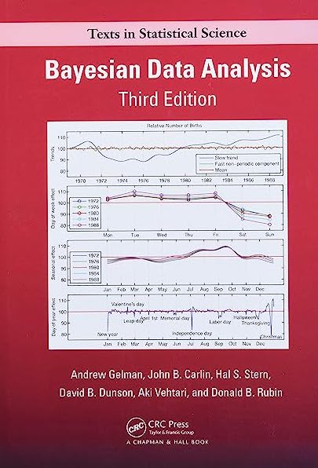

STA 702 Fall 2023
Bayesian Statistical Modeling and Data Analysis
Course Overview
This course provides an introduction to Bayesian statistics targeted towards building a foundation for later research in developing models appropriate to complex data applications and to methodology research developing new modeling/inferential frameworks and algorithms. Topics include the basic foundations of Bayesian inferences – prior distributions, likelihood functions, posterior distributions, loss functions, and Bayes estimators/decisions with illustration in simple cases. Posterior computation in non-conjugate models with Markov chain Monte Carlo (MCMC) algorithms in addition to approximations to posteriors based on Laplace and variational approaches will be covered. We will build (and critique) models for a variety of data types and structures including regression, classification, and dependent data, hierarchical models for the borrowing of information, and methods for dealing with model uncertainty. Throughout we will discuss the difference between classical and Bayesian paradigms as well as advantages/disadvantages of Bayes. Time permitting we will discuss generalized Bayes.
Learning Objectives
By the end of this course, students should be able to
- Understand the basics of Bayesian inference, that is, be able to define likelihood functions, prior distributions, posterior distributions, prior predictive distributions and posterior predictive distributions.
- Derive posterior distributions, prior predictive distributions and posterior predictive distributions, for common likelihood-prior combinations of distributions.
- Interpret the results of fitted models and conduct checks to ascertain that the models have converged.
- Use the Bayesian methods and models covered in class to analyze real data sets.
- Assess the adequacy of Bayesian models to any given data and make a decision on what to do in cases when certain models are not appropriate for a given data set.
Course Info
Instructional Team and Office Hours
| Role | Name | Office Hours | Location | |
|---|---|---|---|---|
| Instructor | Dr Merlise Clyde | Mon 9:00- 10:00, Thur 1:45-2:45 or by appointment (I have lots of 30 minute gaps!) |
223E Old Chem | |
| TA | Rick Presman | TBA | TBA |
Meeting Times
Lecture
Tuesdays and Thursdays (10:05am - 11:20am)
Perkins LINK 060 (Classroom 1)
Labs
Fridays (11:45pm - 1:00pm)
Perkins LINK 060 (Classroom 1)
Zoom meetings
Occasionally we may need to meet over Zoom for class/lab or Office hours. The easiest way for you to join the different Zoom meetings is to log in to Sakai, go to the “Zoom meetings” tab, and click “Upcoming Meetings”. For the recordings (for lecture/lab and discussion sessions were recorded), also log in to Sakai, go to the “Zoom meetings” tab, and click “Cloud Recordings”. Those will be available few minutes after the sessions.
Texts
| Title | Author(s) | Publisher | |
|---|---|---|---|
| A First Course in Bayesian Statistical Methods | Peter D. Hoff, 2009 | Springer | |
|  | Bayesian Data Analysis (Third Edition) | Andrew Gelman, John Carlin, Hal Stern, David Dunson, Aki Vehtari, and Donald Rubin | Chapman and Hall/CRC |
All books are available available online from Duke library. See the Resources tab for additional links
Materials
Lecture notes and slides, and assigned readings will be posted on the course website. Homework and Lab Assignments will be posted on Github
Important Dates
| Tues, Aug 29 | Classes begin |
| Fri, Sept 8 | Drop/Add ends |
| Sat - Tues, Oct 14 - 17 | Fall Break |
| Friday, Oct 13 | Midterm I (tentative) |
| Tues, Nov 20 | Midterm II (tentative) |
| Friday, Dec 1 | Graduate Classes End |
| Dec 2 - Dec 12 | Graduate Reading Period |
| Sat, Dec 16 | Final Exam (Perkins 060 2:00-5:00pm) |
Green Classroom
 This course has achieved Duke’s Green Classroom Certification. The certification indicates that the faculty member teaching this course has taken significant steps to green the delivery of this course. Your faculty member has completed a checklist indicating their common practices in areas of this course that have an environmental impact, such as paper and energy consumption. Some common practices implemented by faculty to reduce the environmental impact of their course include allowing electronic submission of assignments, providing online readings and turning off lights and electronics in the classroom when they are not in use. The eco-friendly aspects of course delivery may vary by faculty, by course and throughout the semester. Learn more at https://sustainability.duke.edu/action/certification.
This course has achieved Duke’s Green Classroom Certification. The certification indicates that the faculty member teaching this course has taken significant steps to green the delivery of this course. Your faculty member has completed a checklist indicating their common practices in areas of this course that have an environmental impact, such as paper and energy consumption. Some common practices implemented by faculty to reduce the environmental impact of their course include allowing electronic submission of assignments, providing online readings and turning off lights and electronics in the classroom when they are not in use. The eco-friendly aspects of course delivery may vary by faculty, by course and throughout the semester. Learn more at https://sustainability.duke.edu/action/certification.
Acknowledgement
This web page contains materials developed or adapted by Dr. Alexander Volfovsky, Dr. David B. Dunson, Dr. Rebecca Carter Steorts and Dr Michael Akande.